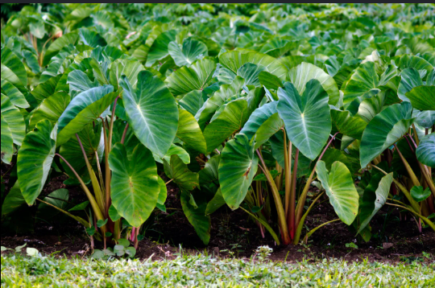
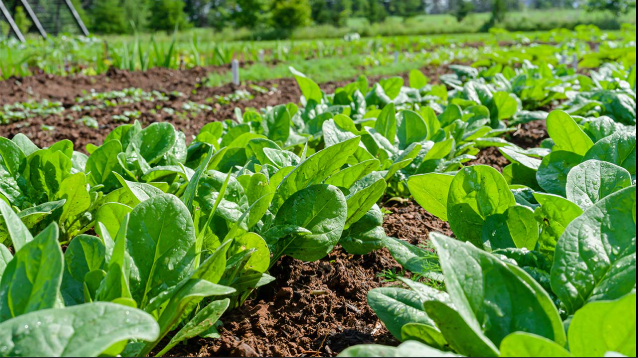
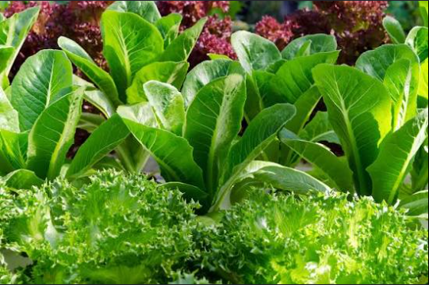

Building Sustainable Communities Together

Working in close alignment with Agricultural Research, Operations, and Products Markets. We establish strategic partnerships with critical stakeholders to safeguard the long-term economic well-being of the broader community.
Structuring community elements systematically. We mobilize local stakeholders, assemble physical and agricultural resources, and formalize necessary operational documentation to create a clear blueprint for expansion.

Overseeing all current operational developments as they grow. This layout tracks our rollout to 500Ha of land with deep community involvement, laying down framework infrastructure where micro and small businesses can natively emerge and jobs are sustainably created.

Providing ongoing, dynamic framework assistance on every operational tier. We are fully dedicated to walking alongside our community growers, ensuring they learn the long-term skills required to reliably grow their own sustenance and supply competitive market crops.